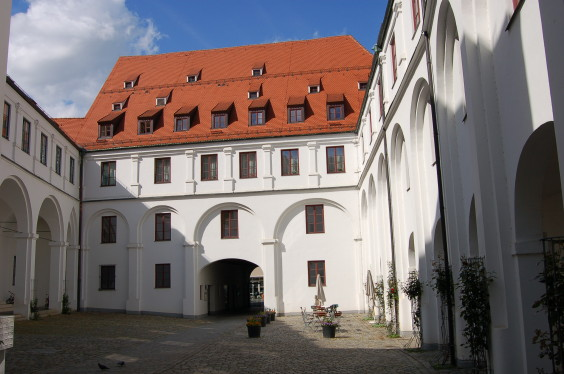
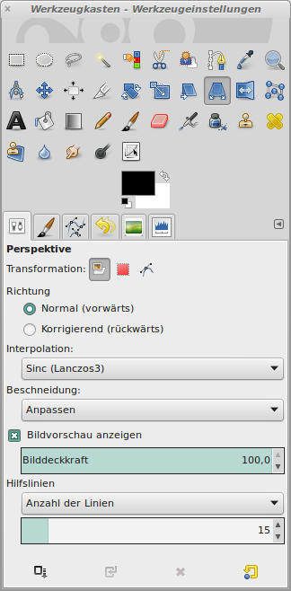
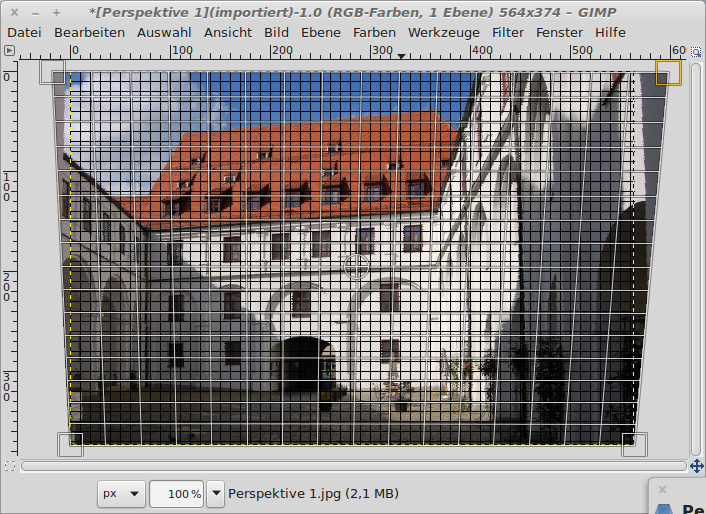
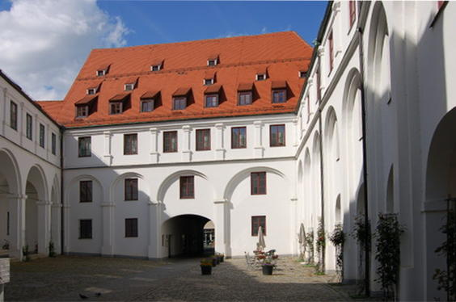

Stürzende Linien über das Perspektivenwerkzeug ändern
Jeder, der schon mal einen Weitwinkel benutzt und dabei Gebäude oder Straßenzüge fotografiert hat, kennt das Probmlem der "stürzenden Linien". Die Gebäude scheinen sich zum Zentrum hin zu neigen.|  |
| Abb.
2: Die "stürzenden Linien" sind deutlich zu erkennen. |
GIMP bietet hierzu im Werkzeugkasten das Perspektiven-Werkzeug:
|  |
| Abb.
2: Werkzeug Perspektive |
Um die Linien später besser ausrichten zu können, wird unter Ansicht → Raster anzeigen ausgewählt. Nach einem Klick in das Bild, lassen sich die oberen Kanten nach außen ziehen und so die Perspektive korrigieren:
|  |
| Abb.
3: Die Linien lassen sich jetzt mit der Maus ausrichten |
Nach einem Klick auf die Schaltfläche "Transformation" wird die Perspektive berechnet. Das fertige Bild sollte nun so aussehen, wie das menschliche Auge die Umgebung wahr nimmt. Unter Ansicht wurde das Raster wieder ausgeblendet.
|  |
| Abb.
4: Das perspektivisch korrigierte Bild |
© 2009-2017 Michael Roppel